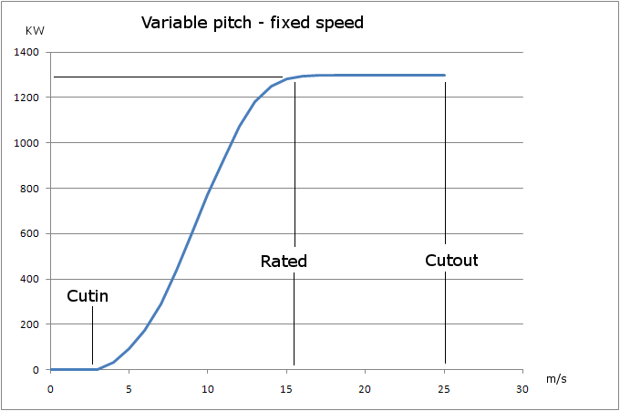

A seguito dei suddetti fattori relativi alla distribuzione eolica (cfr.Influenza del sito in cui è installata la turbina eolica) e la risposta prevista del treno di potenza scelto (vediRequisiti del treno di potenza), le turbine eoliche con i treni elettrici adattabili al vento hanno una curva di potenza vs. vento come mostrato nella figura sottostante.
